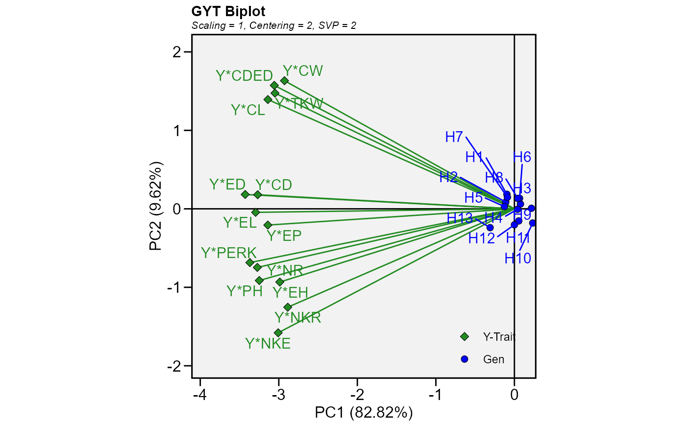

![[Stable]](figures/lifecycle-stable.svg)
Produces a Genotype by Yield*Trait biplot (GTY) proposed by Yan and Fregeau-Reid (2018).
gytb( .data, gen, yield, traits = everything(), ideotype = NULL, weight = NULL, prefix = "Y", centering = "trait", scaling = "sd", svp = "trait" )
Arguments
| .data | The dataset containing the columns related to Genotypes, Yield, and Traits. |
|---|---|
| gen | The name of the column that contains the levels of the genotypes. |
| yield | The column containing the yield values. |
| traits | The column(s) with the traits values. Defaults to
NULL. In this case, all numeric traits in |
| ideotype | A vector of |
| weight | The weight assumed for each trait. Similar to |
| prefix | The prefix used in the biplot for the yield*trait combinations.
Defaults to |
| centering | The centering method. Must be one of the |
| scaling | The scaling method. Must be one of the |
| svp | The method for singular value partitioning. Must be one of the
|
Value
The function returns a list of class gge that is compatible with the function plot() used in gge().
data The Genotype by yield\*trait (GYT) data.
ge_mat The Genotype by yield\*trait (GYT) data (scaled and centered).
coordgen The coordinates for genotypes for all components.
coordenv The coordinates for traits for all components.
eigenvalues The vector of eigenvalues.
totalvar The overall variance.
labelgen The name of the genotypes.
labelenv The names of the traits.
labelaxes The axes labels.
centering The centering method.
scaling The scaling method.
svp The singular value partitioning method.
d The factor used to generate in which the ranges of genotypes and traits are comparable when singular value partitioning is set to 'genotype' or 'trait'.
grand_mean The grand mean of the trial.
mean_gen A vector with the means of the genotypes.
mean_env A vector with the means of the traits.
scale_var The scaling vector when the scaling method is
'sd'.
References
Yan, W., & Fregeau-Reid, J. (2018). Genotype by Yield\*Trait (GYT) Biplot: a Novel Approach for Genotype Selection based on Multiple Traits. Scientific Reports, 8(1), 1-10. doi: 10.1038/s41598-018-26688-8
Author
Tiago Olivoto tiagoolivoto@gmail.com
Examples
# \donttest{ library(metan) # GYT biplot for all numeric traits of 'data_g' # KW (kernel weight) considered as 'yield', mod <- gytb(data_g, GEN, KW) plot(mod)#> Warning: ggrepel: 1 unlabeled data points (too many overlaps). Consider increasing max.overlaps# }